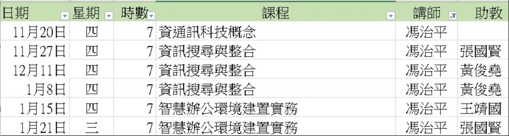

2025.11-2026.01 08:50-16:50
職場AI班
課程廣播 -- 手加連結 https://meet.google.com/pno-snag-qyy
教師郵箱 cp.ifong4@gmail.com

運用AI工具提升資訊搜尋與整合能力,透過 ChatGPT 進行有效提問與資料比對,Al整理知識、Google Sheets 進行資料視覺化,強化資料分析、彙整與簡報製作能力
智慧辦公環境建置實務辦公環境的網路怖線方式、網通設備連線測試、影音設備配置、視訊會議環境設置
教師簡介
w1 1120 科技概念
w2 1127 運用AI工具提升資訊搜尋與整合能力A
w3 1211 運用AI工具提升資訊搜尋與整合能力B
w4 0108 運用AI工具提升資訊搜尋與整合能力C
w5 0115 智慧辦公環境建置實務辦公環境A
w6 0126 智慧辦公環境建置實務辦公環境B